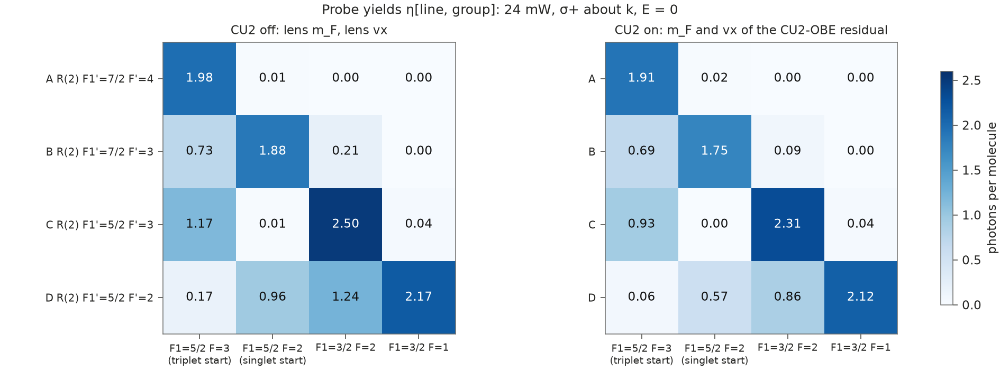
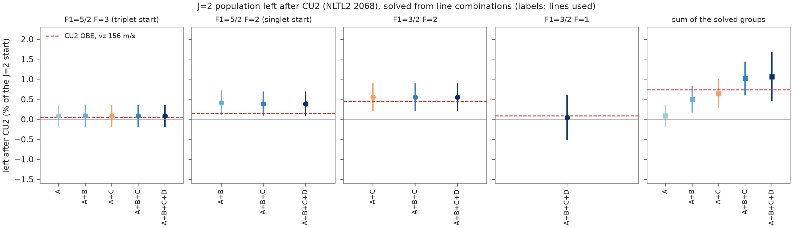
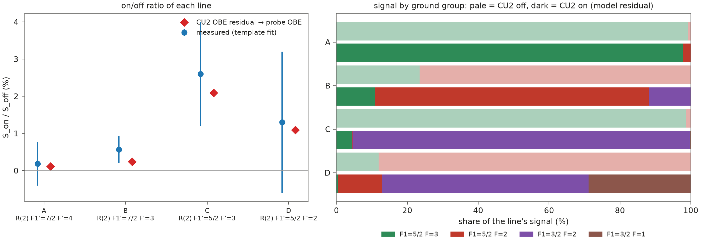

CU2 之后 J=2 各超精细能级剩下多少：用四条探测线的组合求解（v2）
CU2 测试 2026-11-08，CU2 NLTL2 2068，RC 在 P(2) F'=1，DET 板不加电压。2026-11-09 分析。
v2（2026-11-09）：ηon 改用 CU2 测试实际设定下新版 CU2 OBE 的逐起始态、逐 vx、逐 y0、逐能级残留（vz = 156 m/s），原第 7 节的残留 vx 修正并入主结果；模型对比全部换成这个 OBE；第 8 节加入 P(2) 探测线。
结论
- 每条探测线看到的基态能级不同，所以把几条线的 CU2 on/off 比组合起来，可以把 CU2 之后每个超精细能级剩下多少分子分开求出来。只用每条线自己 run 内的 on/off 比，CU2 快门每发 shot 交替开关，所以不受束流漂移影响。
- 四条线一起解，以 CU2 前 J=2 总数为 100 %：F1=5/2 F=3（三重态）0.08 ± 0.27 %；F1=5/2 F=2（单态那一组）0.39 ± 0.31 %；F1=3/2 F=2 0.55 ± 0.35 %；F1=3/2 F=1 0.04 ± 0.57 %；总共 1.07 ± 0.61 %（90 % CL < 1.85 %），即 J=2 清除效率 98.9 ± 0.6 %。各行都是 CU2 前 J=2 总数的百分比，相加就是总残留。
- CU2 OBE（CU2 测试实际设定：δ0 = 13 MHz，fAOM = 209 MHz，20 + 30 mW，217 V/cm，vz = 156 m/s）预测 0.05 / 0.15 / 0.45 / 0.09 %，总共 0.74 %。四组和总和都在 1σ 以内；反过来用模型残留预测四条线的 on/off 比，也都在 1σ 以内（图 3）。
- 残留的 vx 分布已经算进去（第 7 节）：CU2 留下的分子集中在大 |vx|，在探测线上发的光子更少，弱耦合的串扰项尤其明显。不考虑这一点，总残留会少算约 0.2 个百分点（0.85 % → 1.07 %）。旧版用旧设定 r(vx) 的近似（1.03–1.06 %）得到确认。
- F1=3/2 的残留是 CU2 从透镜态泵进去的（CU2 前为空）：模型里每个单态分子有 0.76 % 被泵进 F1=3/2，每个三重态分子 0.27 %。最有信息量的组合是 A+C：R(2) F1'=5/2 F'=3 线 CU2 开时那 2.6 % 的信号，按模型约 95 % 来自泵进 F1=3/2 F=2 的分子，不是三重态没清干净。测量 0.55 ± 0.35 %，模型 0.45 %，只有 1.6σ。
- 对 CU2 前布居假设不敏感（第 6 节）：ft 在 0.30–0.60 之间变化，或者 CU2 前 F1=3/2 放 0–5 % 的布居，三重态清除效率（99.81 %）、F1=5/2 F=2 清除效率（99.24–99.34 %）和 J=2 总残留（1.06–1.10 %）都基本不变。
- D 线（R(2) F1'=5/2 F'=2）的统计误差太大（±1.9 %），对 F1=3/2 F=1 几乎没有约束。
1. 数据
四次 1000-shot 的 CU2 on/off run，CU2 都在 NLTL2 2068。每个 burst 20 shot，CU2 快门每发交替，用 PXIe ch5 上的光电二极管判断开关。R = Son/Soff 用 template fit 得到：S̄on(t) = R S̄off(t) + a + b t（开、关快门的平均波形，a + b t 为线性基线），拟合 3–41.8 ms；误差是 burst bootstrap。Soff 是关快门的 fl（14–36 ms 积分），误差是 burst SEM。
| 线 | 跃迁 | 时间 | R = Son/Soff | Soff（mV·ms/shot） |
|---|
| A | R(2) F1'=7/2 F'=4 | 16:12 | 0.0019 ± 0.0059 | 7.09 ± 0.64 |
| B | R(2) F1'=7/2 F'=3 | 16:08 | 0.0057 ± 0.0037 | 12.05 ± 1.42 |
| C | R(2) F1'=5/2 F'=3 | 16:45 | 0.026 ± 0.014 | 2.52 ± 0.36 |
| D | R(2) F1'=5/2 F'=2 | 16:20 | 0.013 ± 0.019 | 2.99 ± 0.37 |
CU2 模式下没有 abs。不同 run 之间的 Soff 受打靶点和束流变化影响：每个 burst 的信号可以差 ±60–100 %，run 和 run 之间还可能有约 20 % 的慢变化。所以下面只在一个地方用到 Soff 的比值，就是定 CU2 前三重态占多少（第 2 节第 3 条）。
2. 模型和计算方法
把 J=2 分成四组 F（即 (F1, F) 能级，下标 F 指整组）：F1=5/2 F=3、F1=5/2 F=2、F1=3/2 F=2、F1=3/2 F=1。每条线 l 的信号是各组分子数乘以每个分子发的光子数：
Sloff = ΣF ηlFoff NFoff, Slon = ΣF ηlFon NFon
用每条线自己的 on/off 比，未知的绝对标定（束流、收集效率）就消掉了：
ΣF ηlFon nF = Rl ΣF ηlFoff fF, Rl = Slon/Sloff, nF = NFon/NJ=2off, fF = NFoff/NJ=2off
fF 是 CU2 关时第 F 组占 J=2 的比例（CU2 前的布居，已知），nF 是 CU2 之后第 F 组剩下的比例（未知），两者都以 CU2 前 J=2 总数为 1。这里 f = (ft, 1 − ft, 0, 0)，四条线给出四个方程，正好解出四个 nF。
假设和输入
- CU2 前的布居（透镜态）：F1=5/2 F=3 在 mF = 0, ±1，F1=5/2 F=2 只在 mF = 0（单态），F1=3/2 两组为 0。记 LF 为 F 组的透镜子能级（LF=3：mF = 0, ±1；LF=2：mF = 0），#LF 为其个数；L = LF=3 ∪ LF=2 是全部四个起始子能级。
- 光子产额 η：用
cu2_detection_test.py 的探测 OBE，24 mW，σ+ 沿 k，E = 0，1.5 × 1.5 cm 平顶光，vz 156 m/s。量子化轴沿 k 计算，再用 |dF(π/2)|2 转到竖直轴上的布居。
- vx 和接受度：透镜态（mJ ≈ 0）用已测的 σvx = 0.65 m/s，|vx| ≤ 1 m/s；y0 按 σy = 10.35 mm、|y0| ≤ 8.5 mm 加权。ηoff 用透镜子能级和这个 vx 分布 G(vx)：
ηlFoff = (1/#LF) ΣmF∈LF Σvx G(vx) ηl(F, mF; vx)
ηl(F, mF; vx) 是处在 (F, mF)、速度 vx 的一个分子在线 l 上发的光子数。F1=3/2 两组 CU2 前为空（fF = 0），它们的 ηoff 不进入方程；为完整起见对全部 mF 取平均。
- ηon 用 CU2 OBE 残留自身的 mF 和 vx 分布（v2 的改动）：
ηlFon = Σi∈L wi Σvx, y0 W(vx, y0) ΣmF∈F Pi; F,mF(vx, y0) ηl(F, mF; vx) / Σi∈L wi Σvx, y0 W ΣmF∈F Pi; F,mF
Pi; F,mF(vx, y0) 是从起始子能级 i ∈ L 出发、CU2 之后在能级 (F, mF) 的布居。这里 mF 取 F 组全部 2F+1 个子能级，而不只是 LF：CU2 会把布居重新分配到别的 mF，也会泵进 F1=3/2。起始子能级权重 wi：ft 平分给 F=3 的 mF = 0, ±1，1 − ft 给 F=2 mF = 0。CU2 泵进 F1=3/2 的分子本来就是透镜态分子，一次光子反冲只改变 vx 约 7 mm/s，所以它们沿用透镜态的 vx 分布（再乘上 CU2 对 vx 的选择），不需要单独的 σvx。
- CU2 OBE：
cu2_power_check.py transfer 13,209 20 30 e217 acc，即 NLTL2 2068 = δ0 13 MHz（B1 扫描标定），fAOM 209 MHz，20 + 30 mW，217 V/cm，每程损耗 5 %，vz 156 m/s；网格 vx = ±0.2, ±0.6, ±1.0 m/s，y0 = 0, 3, 6, 9 mm。
- ft：由 CU2 关时 SB/SA = 1.56 ± 0.17 得到。这是两对相邻 run 的平均：15:41/15:48 和 16:08/16:12，各相隔 4–7 min。解出 ft = 0.441，即 Ns/Nt ≈ 1.27。这是整个计算里唯一用到不同 run 之间信号比的地方。
- 误差：对 Rl（独立高斯）和 SB/SA 做 Monte Carlo，各 20000 次，每次重新解方程。

图 1：每个分子在每条线上的光子数 ηlF（l：线，F：组）。左：CU2 关时，透镜态的 mF 和 vx；右：CU2 开后，按 OBE 残留的 mF 和 vx。A 线只看 F1=5/2 F=3；B 线看 F1=5/2 F=2，外加 F=3 的串扰；C 线看 F1=5/2 F=3 和 F1=3/2 F=2，看不到单态；D 线主要看 F1=3/2 F=1，也看到 F1=5/2 F=2 和 F1=3/2 F=2。残留偏向大 |vx|，所以右边的串扰项明显变小（例如 D 线上的 F=3：0.17 → 0.06，B 线上的 F1=3/2 F=2：0.21 → 0.09）。
3. 不同组合能得到什么
η 矩阵接近下三角，所以可以按“每加一条线就多解出一组”的顺序来理解。下面都是 24 mW、残留 mF 和 vx 按 OBE 的结果，以 CU2 前 J=2 总数的百分比给出。
3.1 只用 A：三重态 F1=5/2 F=3
nF=3 = RA ft ηA,F=3off / ηA,F=3on ≈ RA ft
R(2) F'=4 上每个 mF 的光子数几乎一样（2.0–2.1，闭合循环），所以结果和 mF 分布基本无关。结果 0.08 ± 0.27 % of J=2，也就是三重态本身剩下 0.19 ± 0.62 %（清除 99.81 %）。模型 0.05 %。
3.2 A + C：F1=3/2 F=2（CU2 泵进去的分子）
C 线看三重态（约 1.0–1.3 个光子）和 F1=3/2 F=2（约 2.4 个光子），看不到单态（0.01）。CU2 关时 F1=3/2 为空，C 线的信号 99 % 来自三重态的串扰。CU2 开后三重态几乎被清空（由 A 线定），C 线上剩下的信号就来自 F1=3/2 F=2：
nF1=3/2, F=2 ≈ (RC − κ RA) ft ηC,F=3off / ηC,F1=3/2 F=2on, κ = ηC,F=3on / ηC,F=3off ≈ 0.8
结果 0.55 ± 0.35 %，模型 0.45 %。κ 小于 1，是因为残留的三重态分子集中在大 |vx|，在 C 线上发的光子更少。所以 C 线那个看起来像“97 % 清除效率”的数（RC = 2.6 %），并不是某一个能级的清除效率：分母是三重态，分子主要是 F1=3/2 F=2（模型里 CU2 开时 C 线信号 95 % 来自它）。
3.3 A + B：F1=5/2 F=2（单态那一组）
B 线 CU2 关时的信号 77 % 来自单态、23 % 来自三重态的串扰。三重态清得更干净，所以 B 线的 R 把单态的残留稀释了。扣掉三重态（A 线）和 F1=3/2 F=2（C 线，B 上只有 0.09 个光子，占 B 线 CU2 开信号的约 12 %）之后：0.39 ± 0.31 % of J=2，也就是单态那一组剩下 0.69 ± 0.56 %，清除约 99.3 %。模型 0.15 %。注意 B 线分不出 mF，CU2 后这一组是 F=2 所有 mF 之和。
3.4 再加 D：F1=3/2 F=1
D 线主要看 F1=3/2 F=1（2.1 个光子），但 F1=5/2 F=2（0.6）和 F1=3/2 F=2（0.9）也占了它 CU2 开信号的大部分。按模型，D 线 CU2 开信号里只有 29 % 来自 F1=3/2 F=1。扣掉这些之后，0.04 ± 0.57 %，模型 0.09 %。约束很弱，D 线需要多得多的统计量。

图 2：每组的残留，横轴是用了哪几条线；红虚线是 CU2 OBE（实际设定，vz 156 m/s）的预测。前面已解出的组在后续组合里保持不变，因为 η 矩阵接近下三角；误差随组合变大，是因为要扣掉的项变多了。最右是已解出各组之和。
4. 反过来检查：用模型预测每条线的 on/off 比
不解方程，直接把 CU2 OBE 的残留（含 mF 和 vx 分布）代入探测模型，预测四条线的 R：A 0.12 %、B 0.24 %、C 2.10 %、D 1.10 %。实测是 0.19 ± 0.59 %、0.57 ± 0.37 %、2.6 ± 1.4 %、1.3 ± 1.9 %，四条都在 1σ 以内（B 线 0.9σ）。这个比较不需要假设 F1=3/2 的残留，也没有求逆放大误差。

图 3 左：每条线实测和模型预测的 on/off 比。右：每条线的信号来自哪些组（模型），浅色是 CU2 关，深色是 CU2 开。C 线和 D 线 CU2 开时的信号主要来自 F1=3/2，CU2 关时则来自透镜态，所以它们的 R 不等于任何一个能级的清除效率。
5. 系统误差
| 探测功率 | CU2 后 vx | CU2 后 mF | F1=5/2 F=3 | F1=5/2 F=2 | F1=3/2 F=2 | F1=3/2 F=1 | 总和 | ft |
|---|
| 15 mW | CU2 OBE | CU2 OBE | 0.09 ± 0.27 | 0.42 ± 0.32 | 0.47 ± 0.29 | 0.07 ± 0.46 | 1.04 ± 0.54 | 0.438 |
| 15 mW | CU2 OBE | 同 CU2 前 | 0.09 ± 0.30 | 0.43 ± 0.31 | 0.46 ± 0.28 | 0.04 ± 0.47 | 1.02 ± 0.56 | 0.438 |
| 15 mW | 透镜态 | CU2 OBE | 0.08 ± 0.25 | 0.34 ± 0.28 | 0.41 ± 0.28 | −0.04 ± 0.47 | 0.79 ± 0.48 | 0.438 |
| 15 mW | 透镜态 | 同 CU2 前 | 0.08 ± 0.26 | 0.35 ± 0.28 | 0.41 ± 0.27 | −0.06 ± 0.47 | 0.78 ± 0.49 | 0.438 |
| 24 mW | CU2 OBE | CU2 OBE | 0.08 ± 0.27 | 0.39 ± 0.31 | 0.55 ± 0.35 | 0.04 ± 0.57 | 1.07 ± 0.61 | 0.441 |
| 24 mW | CU2 OBE | 同 CU2 前 | 0.09 ± 0.29 | 0.40 ± 0.30 | 0.55 ± 0.33 | 0.01 ± 0.58 | 1.05 ± 0.62 | 0.441 |
| 24 mW | 透镜态 | CU2 OBE | 0.08 ± 0.25 | 0.32 ± 0.29 | 0.50 ± 0.35 | −0.05 ± 0.58 | 0.85 ± 0.57 | 0.441 |
| 24 mW | 透镜态 | 同 CU2 前 | 0.08 ± 0.26 | 0.33 ± 0.29 | 0.50 ± 0.33 | −0.07 ± 0.58 | 0.84 ± 0.57 | 0.441 |
单位：CU2 前 J=2 总数的百分比。加粗行是主结果。“透镜态”一行是旧版的主结果做法（不含残留 vx）；“同 CU2 前”：每组的 mF 取 CU2 前的分布（F1=3/2 均匀），vx 不变。误差只含四条线 Rl 和 SB/SA 的统计误差（这张表每行 5000 次）。
- 影响最大的是残留的 vx 分布：J=2 总和 0.85 → 1.07 %，主要落在 F1=5/2 F=2 和 F1=3/2 F=2（串扰项在大 |vx| 时光子变少，扣掉的串扰变少）。这一项已经由 CU2 OBE 定下来，不再作为系统误差。
- 探测功率（15 / 24 mW）和 CU2 后的 mF 分布的影响都小于统计误差。旧版里“F1=3/2 σvx 取 1.4 m/s”那一项去掉了：CU2 后的 F1=3/2 分子是泵进去的透镜态分子，vx 由 OBE 给出。
- ft（来自不同 run 之间的 SB/SA）的误差已经包含在 Monte Carlo 里。它对结果的影响很小，因为每个 nF 都正比于 Rl，而 Rl 很小。
- 没有考虑的：探测锁频点和线心的偏差（弱耦合分量对它敏感），以及 CU2 前非透镜态（F1=3/2、F1=5/2 |mJ| ≥ 1）可能更宽的 vx 分布（它们在这里布居为 0，见第 6 节）。
一个没解决的矛盾：用同一个 η 矩阵和 ft 预测 CU2 关时 C、D 线和 A 线的信号比，模型给 0.59 和 0.70，实测是 0.36 ± 0.06 和 0.42 ± 0.07。这一项用的是不同 run 之间的绝对信号，C、D 两次 run 比 A 晚 8–33 min，所以可能是束流慢漂移；也可能是模型高估了弱耦合的串扰。用四条线 CU2 关信号做的非负最小二乘也指向后者：弱耦合的光子数乘 0.6 时四条线才同时对上。如果是这样，ηC,F=3 偏大，A+C 推出的 F1=3/2 F=2 会偏小。上面的 on/off 结果本身不受漂移影响。
6. 对 CU2 前布居假设的敏感度
6.1 初态 f 是怎么定的
- F1=3/2 两组 CU2 前为 0 是假设：透镜只把 F1=5/2 的 mJ ≈ 0 态送到 CU2。数据本身没有测出这一点。
- 三重态和单态之比只能由 A、B 两条线 CU2 关时的信号比 SB/SA 定。A 只看三重态，B 主要看单态、另有约 23 % 来自三重态的串扰：
SB/SA = [ηB,toff ft + ηB,soff (1 − ft)] / [ηA,toff ft + ηA,soff (1 − ft)] ⟹ ft = (ηB,soff − r ηA,soff) / [r (ηA,toff − ηA,soff) − (ηB,toff − ηB,soff)], r = SB/SA
- 另一个会话的
cu2_test_start_fit.py：四条线 CU2 关的信号做不加权 NNLS，得到 41 : 59 : 0 : 0。F1=3/2 两组在 N ≥ 0 的边界上被压成 0，所以实际上由 16:08/16:12 那一对 run 的 r = 1.70 决定。
- 本文用两对相邻 run 的平均 r = 1.56 ± 0.17，得到 ft = 0.441。r 的 1σ 范围对应 ft 约 0.40–0.48。
6.2 结果
主设置：24 mW，残留 mF 和 vx 按 CU2 OBE。清除效率定义为 1 − nF/fF，只对 CU2 前有布居的组有意义；残留 nF 以 CU2 前 J=2 总数为 100 %。误差只含四条线 Rl 的统计误差。
| (a) 改变三重态/单态比，F1=3/2 为空：f = (ft, 1 − ft, 0, 0) |
|---|
| ft | F=3 清除效率 | F1=5/2 F=2 清除效率 | F1=3/2 F=2 残留 | F1=3/2 F=1 残留 | J=2 总残留 |
|---|
| 0.30 | 99.81 ± 0.62 % | 99.34 ± 0.47 % | 0.38 % | +0.17 % | 1.06 % |
| 0.35 | 99.81 ± 0.61 % | 99.33 ± 0.50 % | 0.44 % | +0.12 % | 1.06 % |
| 0.41（41 : 59） | 99.81 ± 0.61 % | 99.32 ± 0.53 % | 0.52 % | +0.07 % | 1.07 % |
| 0.441（本文） | 99.81 ± 0.61 % | 99.31 ± 0.55 % | 0.55 % | +0.04 % | 1.07 % |
| 0.50 | 99.81 ± 0.61 % | 99.29 ± 0.60 % | 0.63 % | −0.01 % | 1.07 % |
| 0.60 | 99.81 ± 0.60 % | 99.24 ± 0.72 % | 0.75 % | −0.10 % | 1.07 % |
| (b) CU2 前 F1=3/2 不为空：其余按 41 : 59 分（这些分子用 OBE 里从 F1=3/2 起始的残留） |
|---|
| CU2 前布居 | F=3 清除效率 | F1=5/2 F=2 清除效率 | F1=3/2 F=2 残留（清除效率） | F1=3/2 F=1 残留（清除效率） | J=2 总残留 |
|---|
| F1=3/2 全为 0 | 99.81 % | 99.32 % | 0.52 %（—） | 0.07 %（—） | 1.07 % |
| F1=3/2 F=2：0.5 % | 99.81 % | 99.32 % | 0.53 %（−5 ± 64 %） | 0.07 % | 1.07 % |
| F1=3/2 F=2：1 % | 99.81 % | 99.32 % | 0.54 %（46 ± 33 %） | 0.06 % | 1.07 % |
| F1=3/2 F=2：2 % | 99.81 % | 99.32 % | 0.56 %（72 ± 17 %） | 0.05 % | 1.08 % |
| F1=3/2 F=2：5 % | 99.81 % | 99.32 % | 0.62 %（88 ± 7 %） | 0.03 % | 1.10 % |
| F1=3/2 F=1：1 % | 99.81 % | 99.32 % | 0.51 % | 0.08 %（92 ± 60 %） | 1.07 % |
| F1=3/2 F=1：5 % | 99.81 % | 99.32 % | 0.49 % | 0.13 %（97 ± 13 %） | 1.08 % |
6.3 解释
- 三重态清除效率完全不依赖初态。A 线只看三重态，1 − εF=3 = nF=3/ft = RA ηA,F=3off/ηA,F=3on，式中没有 ft。
- F1=5/2 F=2 的清除效率几乎不变（99.24–99.34 %）。B 线 CU2 关时的三重态份额随 ft 变，但 CU2 开时三重态的贡献 ηB,ton nt ∝ ft 也按同样比例变，两者基本抵消。
- F1=3/2 两组的残留随 ft 成正比变化。它们是由 C、D 线 CU2 开时的信号推出来的，而这两条线 CU2 关时的信号（即 Rl 的分母）主要来自三重态，所以 nF1=3/2 ∝ Rl ηl,toff ft。在 ft 的 1σ 范围内，F1=3/2 F=2 是 0.51–0.61 %，比统计误差 ±0.35 % 小。
- J=2 总残留（1.07 %）基本不随 ft 变。ft 增大时 F1=3/2 的残留变多、F1=5/2 F=2 的残留变少，两者互相补偿。
- CU2 前 F1=3/2 有少量布居，影响也很小。即使 F1=3/2 F=2 初始占 5 %，其他组也几乎不变，它自己的残留只从 0.52 % 增加到 0.62 %。它自己的“清除效率”只在初始布居 ≳ 2 % 时才有意义；初始布居更小时，这个比值的误差太大。这里这些分子用的是透镜态的 vx 分布；非透镜态的 vx 分布可能更宽，CU2 对它们会清得更差，这一点还没有算。
结论：选 41 : 59 还是 44 : 56，对三重态和 F1=5/2 F=2 的清除效率以及 J=2 总残留都没有影响。F1=3/2 的残留会变化约 ±0.05 个百分点，远小于统计误差。真正决定结果的是每条线自己的 on/off 比 Rl，以及光子数矩阵里的串扰项（第 5 节）。
7. CU2 残留的 vx 分布（v2：已用新版 CU2 OBE 算出，并入主结果）
7.1 问题
旧版的 η 都假设 CU2 前后的 vx 分布相同（σvx = 0.65 m/s）。但 CU2 对 Doppler 频移有选择性：|vx| 大的分子离 CU2 共振远，更容易留下来。这些分子在探测光上也离共振远，发的光子更少，线宽窄的弱耦合分量尤其明显。所以 CU2 开时每个残留分子的有效 ηon 应该更小；用透镜态的 vx 分布会把 ηon 算大，推出的残留 nF 因此偏小。
7.2 旧版的近似和 v2 的做法
- 旧版近似：CU2 开时的 vx 权重取 G(vx) r(vx)，r(vx) 是旧设定（200 V/cm，80 + 24 mW，3 cm 光束，R1/R2 工作点）下 J=2 总量的残留随 vx 的变化，四组用同一个 r(vx)。
- v2：按旧版 7.4 的步骤，用 CU2 测试实际设定下的 CU2 OBE（第 2 节）逐起始态、逐 vx、逐 y0、逐能级的残留直接构造 ηon。NLTL2 2068 对应 δ0 = 13.1 MHz：由 B1 扫描的线性标定（斜率 −0.9767 MHz IR / MHz NLTL2），2068 对应 −0.36 MHz IR，xIR = (δ0 − 14.5 MHz)/4。
7.3 结果（24 mW）
| ηon（含残留 vx）/ ηon（透镜态 vx 分布） |
|---|
| A, F=3 | B, F=2 | C, F1=3/2 F=2 | D, F1=3/2 F=1 | B, F=3 | C, F=3 | D, F1=5/2 F=2 | D, F1=3/2 F=2 | B, F1=3/2 F=2 |
|---|
| v2（CU2 OBE，逐能级） | 0.94 | 0.93 | 0.94 | 0.98 | 0.77 | 0.63 | 0.56 | 0.77 | 0.40 |
| 旧版近似（旧 r(vx)） | 0.94 | 0.93 | 0.94 | 0.97 | 0.79 | 0.62 | 0.63 | 0.79 | — |
| 能级 | 不含残留 vx | 旧版近似，R1 形状 | v2：CU2 OBE（主结果） | CU2 OBE 模型 |
|---|
| F1=5/2 F=3 | 0.08 ± 0.26 % | 0.084 ± 0.27 % | 0.08 ± 0.27 % | 0.05 % |
| F1=5/2 F=2 | 0.32 ± 0.29 % | 0.38 ± 0.31 % | 0.39 ± 0.31 % | 0.15 % |
| F1=3/2 F=2 | 0.50 ± 0.35 % | 0.54 ± 0.33 % | 0.55 ± 0.35 % | 0.45 % |
| F1=3/2 F=1 | −0.05 ± 0.58 % | +0.03 ± 0.57 % | +0.04 ± 0.57 % | 0.09 % |
| J=2 合计 | 0.85 ± 0.57 % | 1.03 ± 0.61 % | 1.07 ± 0.61 % | 0.74 % |
| 清除效率：F=3 / F1=5/2 F=2 / J=2 | 99.82 / 99.43 / 99.15 % | 99.81 / 99.32 / 98.97 % | 99.81 / 99.31 / 98.93 % | — |
单位：CU2 前 J=2 总数的百分比。“不含残留 vx”一列在这个网格上算（vx = ±0.2, ±0.6, ±1.0 m/s），和旧版主结果（0.83 %）差 0.02 个百分点。“旧版近似”一列抄自旧版第 7.3 节。
- 对角项（每条线本来要测的能级）两种做法几乎一样；串扰项也接近，B 线上的 F1=3/2 F=2（0.40）是旧版没有列出的一项。
- 每组残留都增加，方向一致，都在 1σ 以内；J=2 合计 0.85 → 1.07 %。旧版的近似（四组用同一个旧设定的 r(vx)）只差 0.04 个百分点。
- F1=5/2 F=2 增加最多：B 线上三重态和 F1=3/2 F=2 的串扰分别降到 0.77 和 0.40，扣掉的串扰变少，多出来的信号就归到 F=2。
8. 怎么改进
- C 线（R(2) F1'=5/2 F'=3）和 D 线多测：现在 C 线是 1.6σ，要到 5σ 需要约 10 倍的 shot 数，即约 10000 shot、约 11 min。D 线要约束 F1=3/2 F=1，需要更多。
- 实测串扰：RC 改打 P(2) F'=2，它会把原本进入单态的分子也泵进三重态，F1=5/2 F=2 就接近空了。这时 CU2 关的 SC/SA 和 SB/SA 直接等于 ηC,F=3/ηA,F=3 和 ηB,F=3/ηA,F=3，可以用来检验第 5 节的矛盾。最好在 ABS 模式下用 fl/abs 测，或者 A–X–A 夹测。
- ft 用 ABS 模式测：CU2 关时测的布居不需要 CU2 光，可以用 fl/abs 直接得到，不受打靶点涨落影响。
- 加 P(2) 探测线（同样 24 mW、板不加电压的探测 OBE）：
- P(2) F1'=3/2 F'=2：对四组的光子数相近（1.05 / 0.64 / 0.92 / 0.65），它的 on/off 比基本就是 J=2 总残留（模型 0.81 %，真实总残留 0.74 %，可以用模型修正）。CU2 关信号约 6.6 mV·ms，500 shot 时 R 的误差约 ±0.67 %。一条线直接给出总清除效率，和四条 R 线的组合互相检验。
- P(2) F1'=1/2 F'=1：只看 F1=3/2（0.7 / 0.7 个光子），看不到透镜态，所以 CU2 关时几乎没有信号、CU2 开时的信号就是 CU2 泵进去的分子，不需要扣串扰。信号小，约为 500 shot 噪声底的 0.7 倍，要把 F1=3/2 合计测到 3σ 约需 8000 shot；归一化要借相邻 run 的 A、B 线。
- 四条 P 线都加进联立求解（每条 500 shot）：J=2 总和的误差 0.56 → 0.35 %，F1=3/2 F=1 的误差 0.56 → 0.42 %。P(2) F1'=1/2 F'=0 的信号太弱（0.3 个光子，只看 F1=3/2 F=1），没有用。
- 非透镜态的 vx：透镜态 σvx = 0.65 m/s，其他态的分布应该更宽。目前 CU2 前非透镜态的布居设为 0；如果要给它们一点布居（第 6.2(b) 节），应改用更宽的 σvx（例如 J=1 实测的 1.28 m/s），看清除效率的敏感度。
脚本（repo scripts/）：cu2_test_line_combinations.py（本文所有数字和图 1–3，docs/state_cleanup/figures/cu2_residual_lines/numbers.json），cu2_test_residual_vx.py（第 7 节），cu2_test_start_fit.py（CU2 关信号的 NNLS），cu2_test_p_lines.py（第 8 节 P(2) 线），cu2_detection_test.py（探测 OBE 的光子产额），cu2_power_check.py（CU2 OBE）。